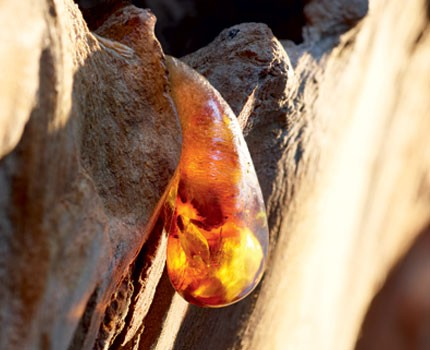
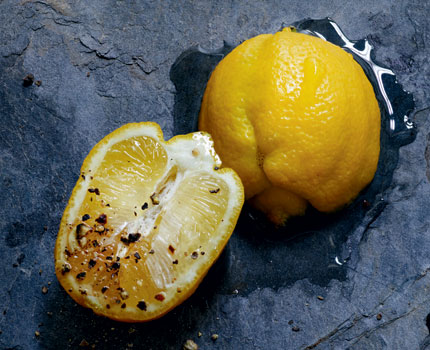
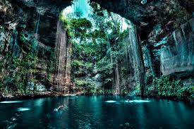

| texto julio  Su morfología suele ser típicamente subcircular, y con las paredes abruptas. Por la evolución del macizo kárstico, el cenote comienza siendo una cámara subterránea producida por la disolución de la roca. |
hola papu  Su morfología suele ser típicamente subcircular, y con las paredes abruptas. Por la evolución del macizo kárstico, el cenote comienza siendo una cámara subterránea producida por la disolución de la roca. |
hola papu  Su morfología suele ser típicamente subcircular, y con las paredes abruptas. Por la evolución del macizo kárstico, el cenote comienza siendo una cámara subterránea producida por la disolución de la roca. |
hola papu Su morfología suele ser típicamente subcircular, y con las paredes abruptas. Por la evolución del macizo kárstico, el cenote comienza siendo una cámara subterránea producida por la disolución de la roca. |